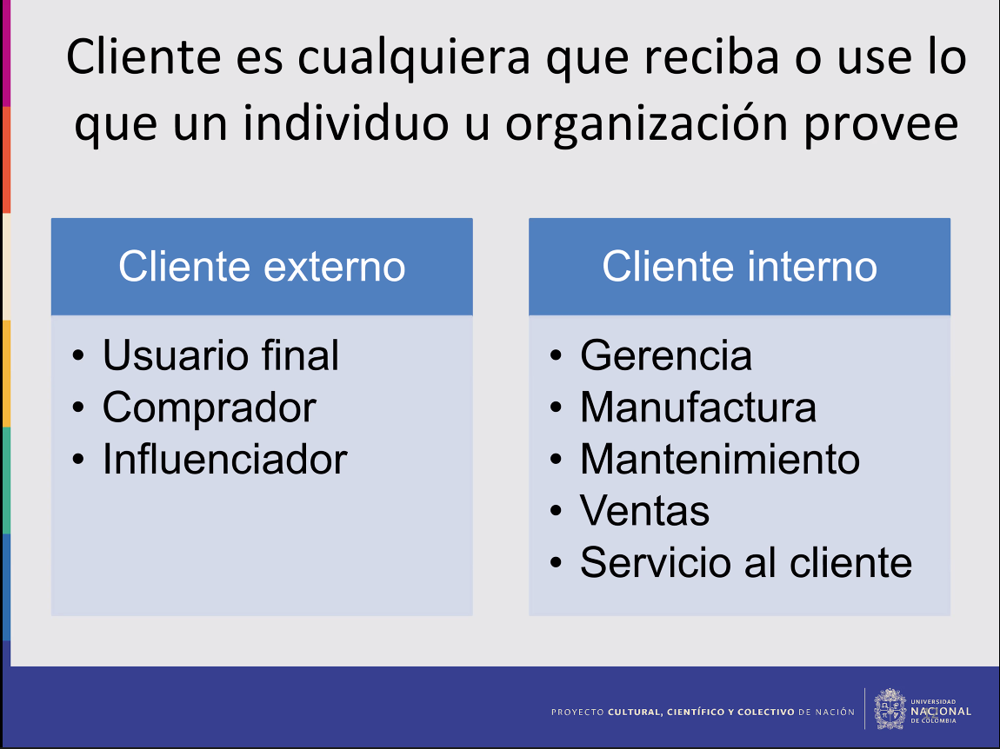

Metodología de gestión de proyectos
Metodología Kanban
Kanban es una palabra japonesa que significa
“visual signal”, “card” o letrero. Es un
método que se deriva de LEAN aplicado por
Toyota.
La idea es que todos puedan ver el trabajo en cada uno de los procesos de producción, definidos por el equipo.
Kanban define 3 grandes rubros: “TO DO”, “DOING”, “DONE”, donde DOING y TO DO, se puede separar en módulos más pequeños. Estos tres rubros tienen un orden definido y cada una de las tareas debe pasar por todo el proceso para llegar a su estado final en DONE.
Para trabajar con esta metodología haremos hincapié en 5 principios, los cuales son:
- Visualize the workflow: Los proyectos muchas veces en sus primeras etapas pueden ser intangibles o invisibles. Sin embargo, una manera de organizarlos, optimizarlos y hacerles seguimiento es a través de la visualización del workflow.
- Limit WIP (Work in progress): Podemos visualizar los problemas y cuellos de botellas, mejorando la productividad y una mejora continua, limitando la cantidad de trabajo asignado a cada integrante. Esto nos permite incrementar la productividad existiendo una ley que nos valida esta afirmación. Little´s law.
- Manage Flow: Monitoreando el proceso de flujo de trabajo, los problemas pueden ser identificados con rapidez.
- Make process policies explicit: Para todos debe ser claro como son las reglas del proyecto y el equipo debe ser capaz de tener discusiones abiertas sobre cómo realizar mejoras de forma objetiva.
- Improve Collaboratively: El equipo debe ser capaz de poder mejorar los procesos de forma colectiva.
Para nuestro caso específico nuestro primer rubro de TO DO se dividirá en dos subsecciones:
Son como las tareas que están pendientes, pero no son prioritarias en ese momento, son tareas que pueden esperar a que la lista de TO DO no tenga más tareas por asignar y se asigna una tarea del backlog con mayor prioridad.
Son las tareas que tienen mayor prioridad en el proceso y necesitan ser asignadas a algún miembro del equipo lo antes posible.
El segundo rubro DOING se dividirá igualmente en dos secciones:
En esta sección se ubicarán las tareas que se están realizando en ese momento, de igual forma se aplicará el principio WIP para asignar las tareas, debido a que somos 4 integrantes, se asignarán máximo 2 tareas por persona, teniendo en el peor de los casos 8 tareas simultaneas distribuidas en todo el equipo.
Cada tarea antes de ser catalogada como finalizada deberá pasar por un proceso de revisión primero, por tanto, una persona distinta a la que realizó la tarea aprobará o comunicará un proceso de mejora para la tarea en cuestión. Para las tareas más importantes se necesitará de la revisión de todo el equipo para su aprobación antes de darla por finalizada.
El tercer rubro DONE es la sección del board donde las tareas se darán como finalizadas una vez han pasado por todo el proceso de izquierda a derecha en el KANBAN BOARD.
Definición del problema del diseño
Introducción
Un problema suele iniciar mediante un problema social, que generalmente suelen ser grande. A raiz de los problemas grandes y a partir del area de experticia de cada persona, se puede solucionar un subproblema o una pequeña parte del problema que podamos resolver con nuestro conocimiento. La unión de todos los problemas por tanto llegará posiblemente a una solución total o parcial del problema inicial.
Estos problemas suelen ser iterativos por tanto a partir de la solución si no se completa en su totalidad
puede dirigir de nuevo a un problema social, así mientras se llega a una solución definitiva.
El problema social por tanto hay que desglosarlo y una forma de analizarlo es mediante las preguntas 5W + 2H, ayudando así
a mitigar las razones del problema y efectos del problema.
De igual forma hay que identificar los involucrados en cada desglose del problema
social por medio de las preguntas, identificando a los involucrados se puede
caracterizar o tener una metodología que va más enfocada hacia los involucrados, resultando así
en una solución más optima.
Todo el análisis del problema es necesario para poder empezar a plantear soluciones
mediante la delimitación del problema social.
Por tanto llegamos a las siguientes preguntas a la hora de delimitar el problema.
A la hora de empezar a abordar nuestra solución, hay que tener un esbozo general de lo que hay, el estado del arte actual, si hay soluciones para problemas similares, ver si me puedo apoyar en alguna solución existente y como implementarla.
Al momento de resolver un problema hay que identificar las necesidades del cliente, no del ingeniero o encargado. Porque si las necesidades no se cumplen todo el trabajo fue desperdiciado.
Metodo de diseño
El proceso de diseño se divide en 4 etapas:
Cliente es todo aquel que recibe o use lo que un individuo u organización provee
